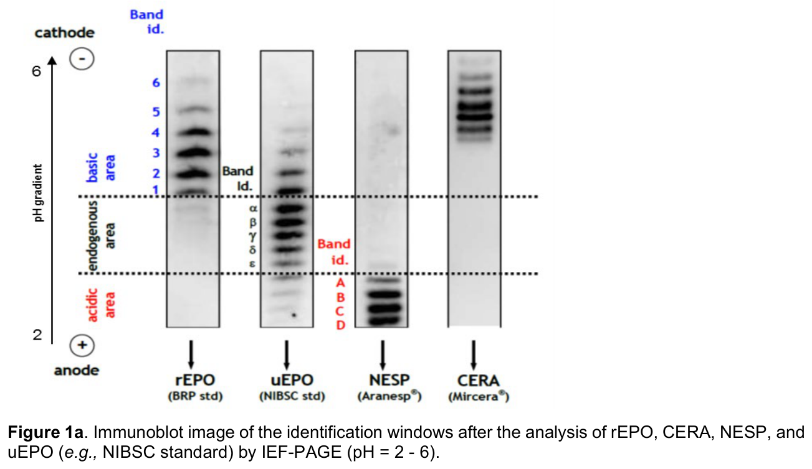
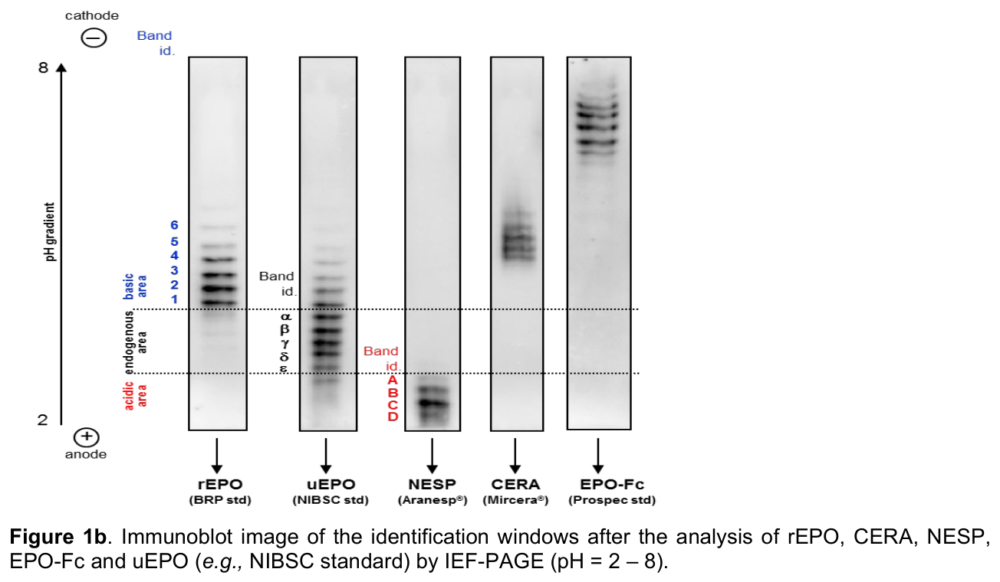
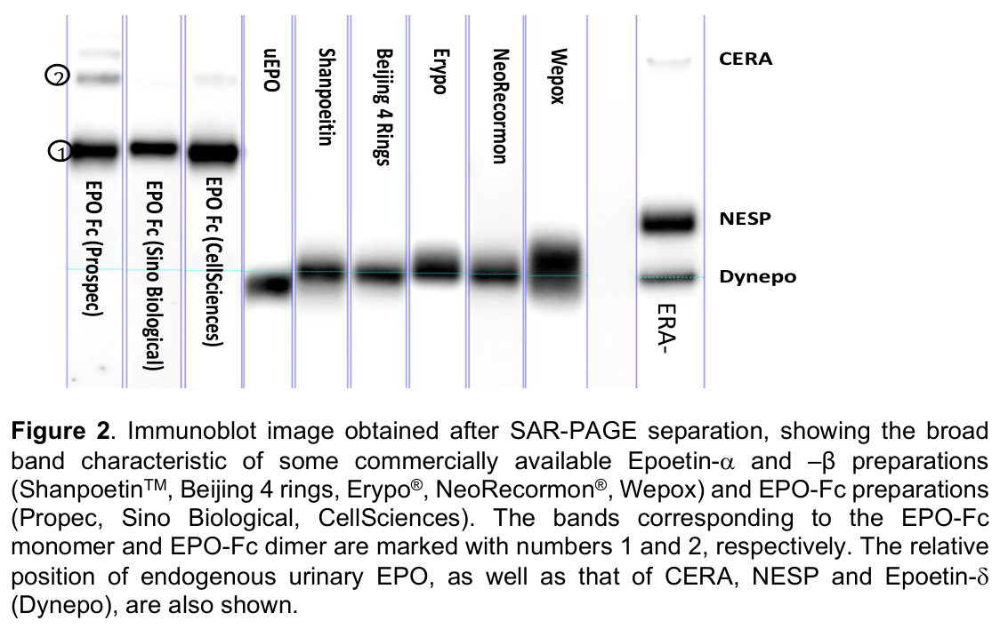
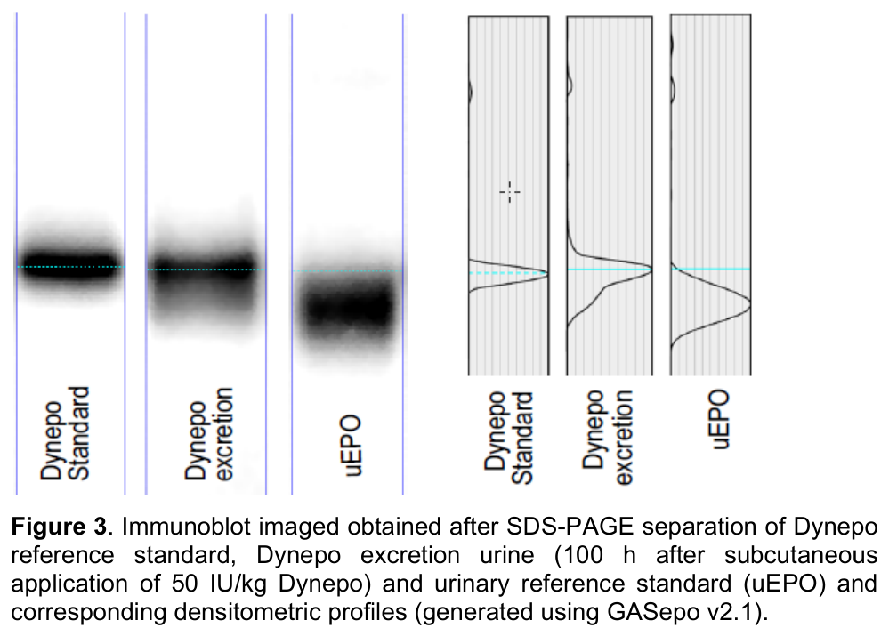
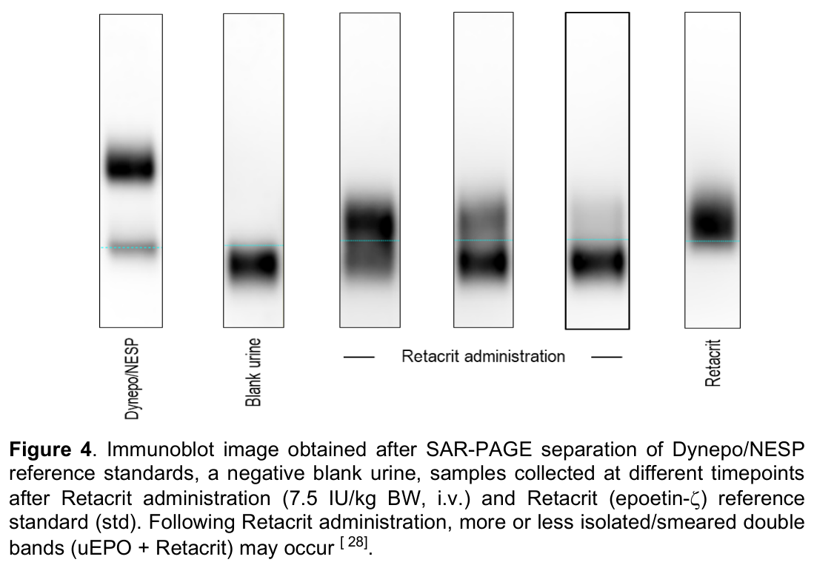
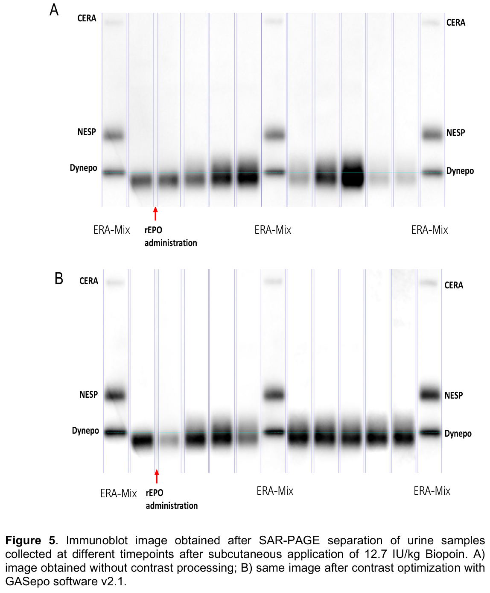
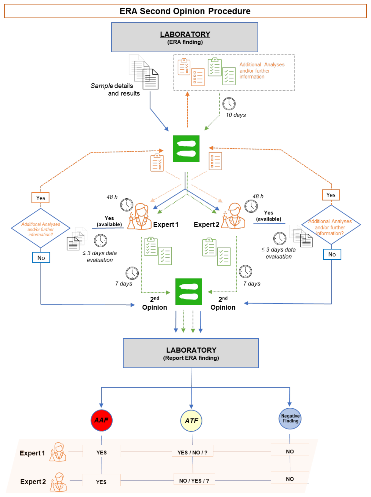
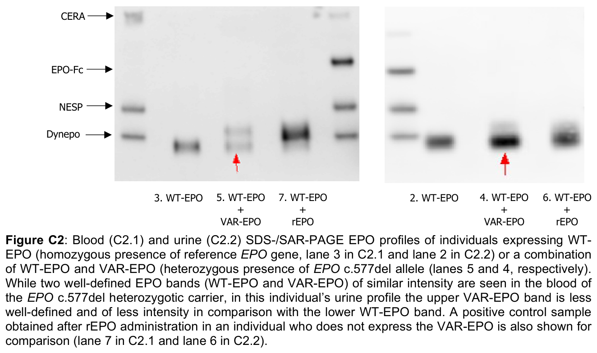
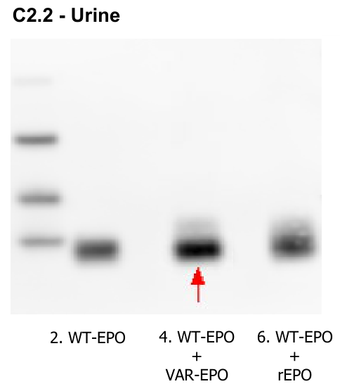
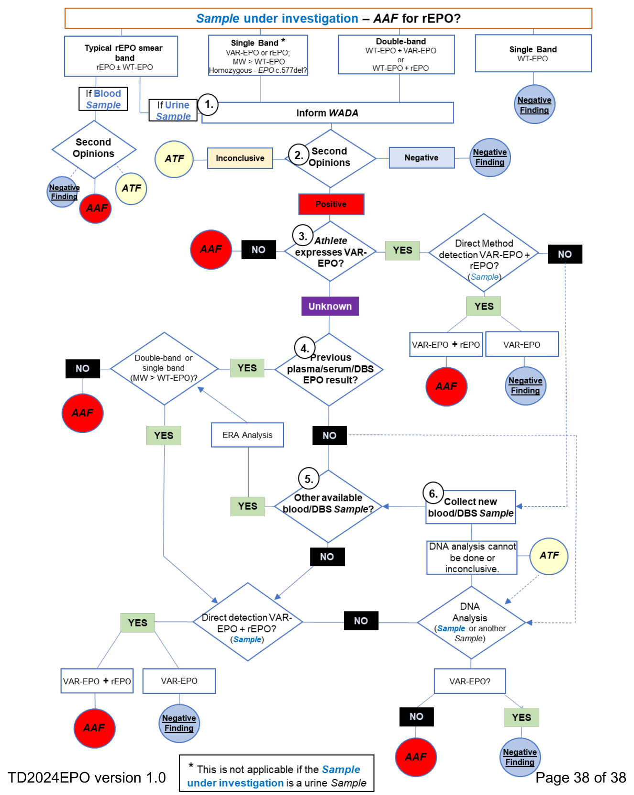

Technical Documents · TD2024EPO
Edition v1.0, 2024 (version 1.0) · effective 15 June 2024 · superseded
Retrieved on 25 November 2026 from https://www.wada-ama.org/sites/default/files/2024-03/td2024epo_eng_final.pdf
Editions: v1.0, 2027 (current) · v1.0, 2024 · v1.0, 2022 · v2.0, 2021 · v1.0, 2014 · v1.0, 2013 · v2.0, 2009 · v2.0, 2007 · v1.0, 2005
p. 1
HARMONIZATION OF ANALYSIS AND REPORTING OF ERYTHROPOIETIN (EPO)- RECEPTOR AGONISTS (ERAs) AND TRANSFORMING GROWTH FACTOR-BETA (TGF-β) SIGNALLING INHIBITORS BY POLYACRYLAMIDE GEL ELECTROPHORETIC (PAGE) ANALYTICAL METHODS.
1.0 Introduction
This Technical Document (TD) has been established to harmonize the detection and reporting of erythropoietin (EPO) and other EPO-receptor agonists (ERAs) by Laboratories when analyzed using PolyAcrylamide Gel-Electrophoretic (PAGE) Analytical Methods. Whenever other techniques are available (e.g., LC-MS), reference to the applicable TD(s) is also made.
All Laboratories shall apply the requirements established in this TD in the routine performance of PAGE Analytical Methods to identify ERAs in urine or blood [(plasma/serum/dried blood spot (DBS)] Samples.
For the purposes of this TD, the following abbreviations, acronyms and trademarks are used:
- CERA (Mircera ® , Roche): Continuous Erythropoietin Receptor Activator, the erythropoietin analogue known by its International Non-proprietary Name (INN) as pegserpoetin, a methoxy-pegylated derivative of epoetin-β.
- EPO: Erythropoietin.
- EPO-Fc: Recombinant fusion protein comprising EPO linked to human immunoglobulin Fc domain.
- bEPO: endogenous erythropoietin as observed in human blood.
- dEPO: darbepoetin. Modified forms of erythropoietin with additional glycosylation sites (e.g., darbepoetin-α, NESP, CRESP, Nesbell, etc.).
- ERAs: Erythropoietin-Receptor Agonists, i.e., erythropoietin (EPO), recombinant erythropoietins (rEPO) and EPO-based constructs (e.g., NESP, CERA, EPO-Fc).
- IEF-PAGE: Isoelectric focusing - polyacrylamide gel electrophoresis.
- NESP (e.g., Aranesp ® , Amgen): Novel erythropoiesis stimulating protein, the erythropoietin analogue known by its INN as darbepoetin-α.
- SAR-PAGE: sodium N-lauroylsarcosinate ('sarcosyl') polyacrylamide gel electrophoresis.
- SDS-PAGE: sodium dodecyl sulfate polyacrylamide gel electrophoresis.
- rEPO: recombinant erythropoietin. These pharmaceutical substances are known by their INN as "epoetin". The different preparations are identified by a Greek letter, e.g., epoetin-α, -β, -δ, -ω. Other preparations (e.g., generics or copies) referred collectively as "rEPO biosimilars" may have differing isoform profiles not exactly matching those already referenced.
- TGF-ß: Transforming Growth Factor beta (TGF-ß) Signalling Inhibitors (e.g. Luspatercept, Sotatercept)
- uEPO: endogenous erythropoietin as observed in human urine.
p. 2
2.0 Analytical Testing for ERA(s)
2.1 Pre-Analytical Procedure
The Laboratory shall follow the Initial Storage and Sample Aliquoting procedures described in the International Standard for Laboratories (ISL)[1]. In order to reduce the possible degradation of ERAs, the Laboratory shall implement the following procedures:
2.1.1 Urine Samples
a) Urine "A" Samples and Aliquots for ERA analysis shall be stored frozen if ERA analysis is not started within twenty-four (24) hours of Sample reception/aliquoting.
b) Following the conclusion by the Laboratory of an ERA Presumptive Adverse Analytical Finding (PAAF) in the "A" Sample, the Laboratory shall perform the "A" Sample Confirmation Procedure (CP) as soon as possible.
i. If the "A" Sample CP cannot be performed within twenty-four (24) hours, the Laboratory shall transfer the "A" Sample container to frozen storage until analysis.
ii. The Laboratory shall transfer the corresponding "B" Sample container to freezing at -70 °C or less.
c) It is recommended that, if requested, the ERA "B" Sample Confirmation Procedure (CP) is performed within one (1) month of reporting the AAF for the "A" Sample 1 .
d) "B" Sample urine Aliquots shall be analyzed within twenty-four (24) hours after thawing. The remaining "B" Sample shall be returned to storage at -70°C or less.
2.1.2 Plasma/Serum Samples
a) If ERA analysis is to be performed on the plasma fraction of blood Samples, both "A" and "B" Samples shall be centrifuged for 10-15 min at 1300-1500 g as soon as is practical to obtain the blood plasma fraction. However, if the Sample has also been collected for Analytical Testing on whole blood (e.g., hematological Markers of the Athlete Biological Passport, homologous blood transfusion, gene doping), the Sample centrifugation and ERA analysis shall await the completion of the ITP(s), and any applicable "A" and/or "B" CPs, on the whole blood.
¹The Testing Authority or Results Management Authority, as applicable, should inform the Laboratory, in writing, within fifteen (15) days following the reporting of an AAF by the Laboratory, whether the "B" CP shall be conducted. This includes situations when the Athlete does not request the "B" Sample analysis or expressly or implicitly waives his/her right to the analysis of the "B" Sample, but the Testing Authority or Results Management Authority decides that the "B" CP shall still be performed.
The timing of the "B" CP may be strictly fixed within a very short period of time (for example, in preparation for or during Major Events) and without any possible postponement, and no later than (1) month of the reported AAF for the "A" Sample.
p. 3
b) If ERA analysis is to be performed on the serum fraction of blood Samples, the Samples shall be centrifuged for 10-15 min at 1300-1500 g as soon as possible after reception in the Laboratory.
c) Once separated by centrifugation, the "A" Sample plasma or serum fraction (contained in the "A" Sample collection tube) and/or the "A" Sample plasma or serum Aliquot(s) taken into separate vials may be stored refrigerated for a maximum of twenty-four (24) hours or frozen until analysis.
d) "A" Sample plasma or serum Aliquots used for "A" CP shall be analyzed as soon as possible, but no later than twenty-four (24) hours after thawing.
e) It is recommended that, following centrifugation, "B" Samples be immediately stored frozen in the sealed "B" Sample collection tube according to established protocols until ERA analysis, if applicable.
f) Following the conclusion by the Laboratory of an ERA PAAF in the "A" Sample, the Laboratory shall transfer the corresponding "B" Sample tube to freezing at -70 °C or less.
g) It is recommended that, if requested, the "B" Sample ERA CP is performed within one (1) month of reporting the AAF for the "A" Sample 1 .
h) "B" Sample plasma or serum Aliquots shall be analyzed within twenty-four (24) hours after thawing. The remaining "B" Sample shall be returned to storage at -70°C or less.
2.1.3 Dried Blood Spots (DBS) Samples
a) DBS Sample storage and aliquoting shall follow the directives from the WADA Technical Document on Dried Blood Spots (DBS) for Doping Control - Requirements and Procedure for Analytical Testing and Storage (TD DBS)[2].
b) For the ITP, one (1) Aliquot corresponding to one (≥ 20µL) or multiple whole spots shall be taken from the "A" Sample. After taking the spot Aliquot, the remaining "A" Sample shall be stored refrigerated.
c) For the "A" CP, a new spot Aliquot shall be taken from the "A" Sample.
d) The "B" Sample shall be stored frozen after reception. If a "B" analysis is to be performed¹ , allow defrosting of the "B" Sample at room temperature before taking a spot Aliquot for the "B" CP [2]. The remaining "B" Sample shall be returned to frozen storage.
If the DBS "A" and "B" Samples are in the same container, the "B" Sample can remain refrigerated until the ITPs and the "A" CPs (if applicable) have been completed.
p. 4
2.2 Description of the PAGE Analytical Methods
2.2.1 IEF-PAGE[3, 8-10]
a) Sample Preparation
For both the ITP and the CP, immunopurification shall be performed prior to the application of IEF-PAGE[3-10].
[Comment: For immunopurification, antibodies other than the one used for immunoblotting shall be used. The Laboratory shall demonstrate through method validation that the immunopurification methodology employed does not change the IEF-PAGE glycoform profiles of the endogenous EPO and the ERA(s) being analyzed.]
b) Electrophoretic Separation
IEF-PAGE is performed in a pH range compatible with the isoelectric points (pI) of the ERA(s) under analysis. IEF-PAGE is performed under denaturing conditions (approximately 7M urea).
c) Immunoblotting
i. Immunoblotting shall be performed by electroblotting to optimize the transfer of the ERA(s).
ii. After IEF-PAGE separation, single-blotting using a cross-reactivity minimized protocol [e.g., using the biotinylated monoclonal mouse anti-human EPO clone AE7A5 (R&D Systems BAM2871)][11, 12] or double-blotting shall be performed.
[Comment: For the analysis of EPO-related ERAs, the monoclonal mouse anti-human EPO clone AE7A5 is the primary antibody recommended to be used for this step. However, at the Laboratory's discretion, other anti-human EPO antibodies with similar specificity and sensitivity characteristics may be used provided they have been duly validated.]
d) Detection
The isoelectric patterns of ERAs are detected using an appropriate, sensitive detection system (e.g., amplified chemiluminescent system). The signal obtained using densitometry must be quantifiable (only 16-bit grayscale TIFF-files shall be used) to determine the relative intensities of the different isoforms of an ERA pattern.
p. 5
2.2.2 SAR-PAGE[9, 13-18] and SDS-PAGE[11, 20, 21]
a) Sample Preparation
For both the ITP and the CP, immunopurification shall be performed prior to the application of SAR- or SDS-PAGE[3-10].
[Comment: For immunopurification, antibodies other than the one used for immunoblotting shall be used. The Laboratory shall demonstrate through method validation that the immunopurification methodology employed does not change the SAR-/SDS-PAGE behaviour of the endogenous EPO and the ERA(s) being analyzed.]
b) Electrophoretic Separation
i. Vertical electrophoresis shall be applied.
ii. It is recommended to use 10% acrylamide (%T) gels for the separation of EPO-related ERAs.
iii. For SAR-PAGE, SDS in sample and running buffers is replaced by sodium N-lauroylsarcosinate.
iv. When using SDS-PAGE in the ITP, or for the CP of CERA and EPO-Fc, an appropriate carrier protein (e.g., casein, insulin) shall be added to the immunopurified eluate before the electrophoretic separation.
v. For the CP of rEPO, Epoetin-δ (Dynepo) or a preparation of recombinant Epoetinα (e.g., Eprex) shall be used as a reference for placing a rEPO migration cut-off line (this requirement is optional for the ITP).
vi. dEPO (e.g.NESP), CERA and EPO-Fc shall be present to define other ERAs' electrophoretic behavior.
c) Immunoblotting
i. Immunoblotting shall be performed by electroblotting to optimize the transfer of the ERA(s).
ii. For the ITP and CP of urine and serum/plasma/DBS Samples, single- or double-blotting may be applied after the electrophoretic separation, in accordance with an appropriate Laboratory method validation. When using single blotting, a cross-reactivity minimized protocol shall be applied (e.g., use of the biotinylated monoclonal mouse anti-human EPO clone AE7A5 (R&D Systems BAM2871)[11, 12]).
[Comment: For the analysis of EPO-related ERAs, the monoclonal mouse anti-human EPO clone AE7A5 is the primary antibody recommended to be used for this step. However, at the Laboratory's discretion, other anti-human EPO antibodies with similar specificity and sensitivity characteristics may be used provided they have been duly validated.]
iii. Several blotting buffers may be used (e.g., Bjerrum, CAPS, Kyhse-Andersen, Towbin).
p. 6
iv. When using SDS-PAGE in the ITP or for the CP of CERA or EPO-Fc, a discontinuous buffer system (e.g., CAPS buffer) or an alternative buffer system ensuring the effective transfer of these large biomolecules shall be used[11].
d) Detection
The electrophoretic patterns of ERAs are detected using an appropriate, sensitive detection system (e.g., amplified chemiluminescent system): only 16-bit grayscale TIFF-files shall be used.
2.3 Analytical Testing Strategy
The Limit of Detection (LOD) of the PAGE Analytical Methods used for the ITP and the CP (including ERA immunopurification, electrophoretic separation and immunodetection), as estimated in the matrix of analysis (maximum 15 mL of urine, or 0.5 mL of serum or plasma or one (1) ≥ 20µL DBS spot) during method validation shall not be higher than (≤) 50% of the corresponding Minimum Required Performance Levels (MRPL) (see Table 1).
Table 1. MRPL of ERAs analyzed by PAGE methods (in Sample matrix)
| Target ERA.Target ERA | Matrix of Analysis.Urine | Matrix of Analysis.Serum / Plasma / DBS |
|---|---|---|
| rEPO | 1 IU/L* | 30 IU/L * |
| dEPO | 1 pg/mL | 30 pg/mL |
| CERA | 5 pg/mL | 150 pg/mL |
| EPO-Fc | 5 pg/mL | 150 pg/mL |
- Defined based on content of rEPO in samples containing both rEPO and endogenous EPO (mixed band on gel).
2.3.1.1 Initial Testing Procedure (ITP)
a) The Laboratory may apply IEF-PAGE[3, 8-10] and/or SAR-PAGE[9, 13-18] or SDS-PAGE[19, 20] for the ITP (see Table 2).
b) The ITP shall incorporate, as a minimum, the PAGE analysis of the following:
i. "A" Sample Aliquot.
ii. Negative quality control (NQC) sample.
[Comment: Quality Control (QC) samples are samples prepared in Sample matrix which undergo the same analytical procedure as the Sample being subject to Analytical Testing (e.g., sample preparation procedure, instrumental analysis, etc.)]
p. 7
iii. Reference standard solutions: Appropriate preparation(s) of ERA standards spiked in sample buffer and used as reference to define basic, acidic and endogenous areas (IEF-PAGE) or apparent molecular mass of ERAs (SAR- or SDS-PAGE).
iv. In addition, the Laboratory may consider the use of Test Sensitivity Controls (TSC): ERA standards, including also endogenous EPO, spiked in sample buffer at levels close (80-120%) to the MRPL of the PAGE method, as defined in Table 1.
[Comment: When used by the Laboratory, TSC serve to verify that the electrophoretic separation method is working as expected in accordance with validation results. However, a failed sensitivity test shall not invalidate the detection of exogenous ERA(s) in a Sample during the ITP (or the CP, if needed), where the gel image fulfils the applicable acceptance and identification criteria described in Article 2.4. For more information on the use of the TSCs, refer also to Articles 2.3.1.2-c and 2.4.1.]
It is recommended that the rEPO content in the TSC be between a 10:90 and 40:60 proportion (ratio) of rEPO:endogenous EPO.
Laboratories may consider implementing TSC at levels lower than 80-120% of the MRPL and closer to their own validated LODs.
For a gel containing both urine and serum/plasma Samples, a single TSC prepared at ERA concentrations close to the lower matrix specific MRPL may suffice.]
v. The Laboratory may also consider the use of an internal standard (ISTD, e.g., CEPO115 from Celares GmbH, Germany)[22], added to the Sample Aliquot, the NQC and the TSC (if used), to verify the Sample preparation procedure (for example, when neither endogenous EPO nor other ERA signals could be detected in a Sample).
[Comment: Absence of ISTD signal in a Sample does not invalidate the analysis when endogenous EPO and/or other ERAs are detected. The ISTD is used to exclude an analytical issue when no EPO/ERA signals are detected in a Sample. A consecutive loss of ISTD signal in a Sample suggests a degradation process affecting the ISTD.]
c) The electrophoretic separation procedure applied when using SDS-PAGE for the ITP shall be performed as described in Article 2.2.2-b.
d) It is recommended that, after electrophoretic separation, Laboratories apply a single blotting procedure using a cross-reactivity minimized protocol [for example, using the biotinylated monoclonal mouse anti-human EPO clone AE7A5 (R&D Systems BAM2871)][11, 12].
[Comment: Laboratories may select to apply an alternative cross-reactivity minimized protocol using a primary antibody in conjunction with a conjugated secondary antibody.]
e) The immunoblotting procedure applied when using SDS-PAGE for the ITP shall be performed as described in Article 2.2.2-c.
p. 8
2.3.1.2 "A" Sample Confirmation Procedure (CP)
a) The "A" CP shall depend on the ERA(s) presumptively found and the methodology employed for the ITP (see Table 2).
b) The "A" CP shall differ from the ITP. This difference may be achieved by, for example, one (or more) of the following:
i. Application of a different Sample immunopurification procedure (e.g., MAIIA columns, StemCell ELISA, magnetic beads, i.e., applying a procedure with a different capture antibody).
ii. Use of a different electrophoretic separation technique (e.g., IEF-PAGE vs. SDS-PAGE vs. SAR-PAGE, where applicable).
iii. Performance of double-blotting where single blotting using a biotinylated antibody is applied for the ITP.
iv. Use of a different detection antibody.
[Comment: The WADA International Standard for Laboratories (ISL)[1] establishes that affinity-binding assays applied for the ITP(s) and CP(s) shall use affinity reagents (e.g., antibodies) recognizing different epitopes of the macromolecule analyzed, unless a purification (e.g., immunopurification) or separation method (e.g. electrophoresis, chromatography) is used prior to the application of the affinity-binding assay to eliminate the potential of cross-reactivity. In this regard, the Selectivity of the PAGE Analytical Methods is provided by the combination of three (3) different physio-biochemical principles of target ERA separation and immune recognition:
1. Initial immunopurification with an EPO-binding antibody.
Physical separation by electrophoresis based on either electric charge (IEF-PAGE) or molecular mass (SAR-/SDS-PAGE).
Immune recognition (affinity binding) of target ERA by immunoblotting using an EPO-binding antibody different from that used for the immunopurification.]
c) The "A" CP shall incorporate, as a minimum, the PAGE analysis of the following:
i. "A" Sample confirmation Aliquot.
ii. NQC sample.
iii. Positive quality control (PQC) sample(s) containing the appropriate ERA(s) (e.g., rEPO, NESP, CERA, EPO-Fc).
[Comment: PQC(s) shall be selected based on the results of the ITP, which provide indication of which ERA(s) is to be confirmed, as well as their expected signal intensities on gel. The Laboratory may choose to use more than one PQC differing on concentration levels of target ERA(s) (for example, low and high ERA concentrations).
The electrophoretic behavior of the ERA(s) in the PQC may not match exactly that of the ERA(s) in the Sample. For example, different kinds of rEPOs may have different migration patterns on the gel, or the ratio of rEPO to endogenous EPO may differ. The migration of the Sample's ERA in the gel may also depend on the route of administration[20]. On occasions, a reference standard for the ERA detected in the Sample may not be available].
p. 9
iv. Reference standard solutions: Appropriate preparation(s) of ERA standards spiked in sample buffer, used as reference enabling to define basic, acidic and endogenous areas (IEF-PAGE) or apparent molecular mass (SAR-PAGE, SDS-PAGE).
v. In addition, the Laboratory may also consider the use of TSC.
[Comment: TSC may be useful for CP of PAAF which result from a low content of ERAs leading to a faint signal on gel (i.e., close to the LOD of the electrophoretic separation method), which cannot be compensated by a higher Aliquot or eluate volume or controlled using available PQC(s). In those cases, the use of the sensitivity controls allows to discriminate signal loss due to ERA degradation in the Sample from failed electrophoretic performance. This may be particularly important for "B" confirmations.]
d) All lanes in the CP gel ("A" Aliquot, NQC, PQC, reference standards, TSC) shall be flanked by empty lanes.
e) After electrophoretic separation, the potential cross-recognition of proteins/peptides not related to the ERA(s) under confirmation shall be minimized. Laboratories shall apply either a single blotting procedure using a cross-reactivity minimized protocol [for example, using the biotinylated monoclonal mouse anti-human EPO clone AE7A5 (R&D Systems BAM2871][11, 12] or, alternatively, a double-blotting procedure.
2.3.1.2.1 "A" Sample CP for rEPOs
a) The CP for rEPOs shall be performed by SAR-PAGE or SDS-PAGE (see Table 2). The same PAGE Analytical Method (i.e., SAR-PAGE or SDS-PAGE) may be applied for both the ITP and the CP (see also Article 2.3.1.2-b).
b) If requested by second opinion provider(s) (see Annex A), IEF-PAGE may be applied as an additional Analytical Method to obtain complementary evidence of the presence/absence of rEPO in the Sample² .
²The Laboratory shall describe in the SOP for the ERA CP the conditions that may lead to a repeat of the CP (e.g., QC or TSC failure, interfering bands, low-intensity band, absence of ERA bands, suspicion of accidental Sample swap).
When the rEPO signal is too low to ensure reliable identification, the Laboratory shall explore measures to improve the signal (e.g., repeat the analysis using a larger Aliquot volume or improve the signal acquisition and contrast) and/or test for the presence of signals of microbial contamination[30] or proteolytic activity[31] in the Sample.
p. 10
c) When needed and based on the results from the ITP, the intensity signals of the confirmation Aliquot and/or the NQC and/or the PQC shall be adjusted to ensure appropriate ERA intensity signals (endogenous EPO ± rEPO) and facilitate the interpretation of results.
[Comment: This adjustment could be made, for example, by adjusting the volume of the "A" confirmation Aliquot or the volume of the eluate obtained after immunopurification of the Aliquot or by adjusting the volume or EPO concentration of the NQC/PQC.]
2.3.1.2.2 A" Sample CP for dEPOs (e.g., NESP), CERA and EPO-Fc
a) For the CP of dEPOs (e.g., NESP), CERA and EPO-Fc the Laboratory may choose to apply IEF- or SAR- or SDS-PAGE (see Table 2). The same PAGE Analytical Method (i.e., IEFor SAR-PAGE or SDS-PAGE) may be applied for both the ITP and the CP (see also Article 2.3.1.2-b).
b) The electrophoretic separation and immunoblotting procedures applied when using SDS-PAGE for the CP of CERA and EPO-Fc shall be performed as described for the ITP (see also Articles 2.2.2-b and 2.2.2-c, respectively).
c) If requested by second opinion provider(s) (see Annex A), an additional, complementary Analytical Method (e.g., IEF-PAGE after either SAR- or SDS-PAGE) may be applied to obtain complementary evidence of the presence/absence of dEPOs, CERA and EPO-Fc in the Sample² .
2.3.1.3 "B" Sample Confirmation Procedure (CP)
a) For the "B" Sample CP, the Laboratory shall use the same Analytical Testing Procedure(s) used for the "A" Sample CP.
[Comment: When the Laboratory has used a second, complementary Analytical Method as additional scientific evidence of the presence of ERA(s) in the "A" Sample, the application of the two (2) Analytical Methods is not necessary during the "B" Sample CP. The use of any confirmation Analytical Method leading to conclusive results for the "A" Sample is sufficient to confirm the presence of the ERA(s) in the "B" Sample.]
b) The "B" CP shall incorporate, as a minimum, the analysis of the "B" Sample Aliquot, ERA standard preparations and QC samples (NQC, PQC). In addition, if a TSC for a low-content ERA was used during the "A" CP, a similar TSC should be analyzed during the "B" CP.
All lanes in the CP gel ("B" Aliquot, NQC, PQC, reference standards) shall be flanked by empty lanes.
p. 11
c) For rEPO "B" CP, when needed based on the results from the A" CP, the intensity signals of the Sample and/or the NQC and/or the PQC shall be adjusted to ensure appropriate ERA intensity signals (endogenous EPO ± rEPO) and facilitate the interpretation of results.
[Comment: This adjustment could be made, for example, by adjusting the volume of the "B" confirmation Aliquot or the volume of the eluate obtained after immunopurification of the Aliquot or by adjusting the volume or EPO concentration of the NQC/PQC.]
Table 2. Analytical Testing strategy for ERAs in urine and blood (serum/plasma/DBS) by PAGE Analytical Methods.
| ERAs | ITP | CP |
|---|---|---|
| rEPO | IEF-PAGE and/or (SAR- PAGE or SDS-PAGE**) | SAR- or SDS-PAGE IEF-PAGE* |
| dEPO (e.g., NESP) | IEF-PAGE and/or (SAR- PAGE or SDS-PAGE**) | IEF- or SAR- or SDS-PAGE |
| CERA*** | IEF-PAGE and/or (SAR- PAGE or SDS-PAGE**) | IEF- or SAR- or SDS-PAGE** |
| EPO-Fc*** | IEF-PAGE and/or (SAR- PAGE or SDS-PAGE**) | IEF- or SAR- or SDS-PAGE** |
- Albeit not mandatory and not necessary in all cases, and upon request by second opinion provider(s), IEF-PAGE may be applied as a second, complementary Analytical Method to obtain additional scientific evidence of the presence or absence of rEPO in the Sample.
** For the use of SDS-PAGE in the ITP, or for the CP of CERA and EPO-Fc, an appropriate carrier protein (e.g., casein, insulin) shall be added to the immunopurified eluate before the electrophoretic separation and an appropriate discontinuous blotting buffer system[11] (e.g., CAPS buffer) or an alternative buffer system ensuring the effective transfer of large biomolecules shall be used for the immunoblotting procedure.
*** Due to their large size, which may affect their renal clearance and excretion in urine, CERA and EPO-Fc are more effectively detected in blood (serum/plasma) than in urine[23 - 25].
2.3.2 Other (non-electrophoretic) Analytical Methods
a) For the CP of specific ERAs (e.g., EPO-Fc), the Laboratory may also apply, at its discretion, substance-specific Analytical Methods (e.g., immunoassays), as additional scientific evidence to arrive at a conclusion[25].
b) In all cases, where a Fit-for-Purpose mass spectrometry (MS)-based Analytical Method is available[26], it can be used for either or both the ITP and the CP(s). In that case the identification criteria, described in the TD IDCR[27], shall be met.
p. 12
2.4 Evaluation and Interpretation of Results
2.4.1 Acceptance criteria
The acceptance criteria for the IEF-PAGE and SAR- or SDS-PAGE procedures define the requisites that an image shall fulfil to allow the application of the identification criteria to ascertain the presence of ERAs.
Spots, areas of excessive background or of absent signal (e.g., bubbles) in a lane that significantly interfere with the application of the identification criteria shall invalidate the lane.
[Comment: When used by the Laboratory, TSC serve to verify that the electrophoretic separation method is working as expected in accordance with validation results. If a sensitivity control(s) fails and the corresponding ERA band(s) are not detected in the Sample(s) either, this may be an indication of a problem in the performance of the electrophoretic method, and in such cases the Laboratory should repeat the ITP or CP, as applicable, for the negative Sample(s) using a new preparation of TSC.
However, when a sensitivity test fails for an ERA(s) this shall not invalidate the detection of the ERA(s) in a Sample in either the ITP or the CP where the Sample gel image fulfils the applicable acceptance and identification criteria described in this Article 2.4.]
2.4.2 Identification Criteria
The identification criteria described herein are applied to CP. However, recommendations are given, as guidance, for criteria to be applied to the ITP when evaluating IEF-PAGE results for rEPOs.
2.4.2.1 IEF-PAGE
Figures 1a and 1b show illustrations of IEF-PAGE test results obtained with a pH gradient of 2-6 or 2-8, respectively. The identification windows for each electrophoretic lane as well as the basic, endogenous and acidic areas are defined. Bands of the preparations used as reference are identified by numbers and letters.
The basic and acidic areas are defined, as described, by the position of the bands corresponding to a rEPO reference preparation or pure epoetins-α or -β and NESP; by exclusion, the endogenous area is defined in between as exemplified by uEPO (International Reference Preparation, IRP, from the National Institute for Biological Standards and Control, NIBSC, UK).
[Comment: The preparation used as a reference for rEPO should be a preparation that is either intended for use in polyacrylamide gel electrophoresis, immunoblotting and other physicochemical tests or for in vitro tests.]
p. 13

Figure 1a. Immunoblot image of the identification windows after the analysis of rEPO, CERA, NESP, and uEPO (e.g., NIBSC standard) by IEF-PAGE (pH = 2 - 6).

Figure 1b. Immunoblot image of the identification windows after the analysis of rEPO, CERA, NESP, EPO-Fc and uEPO (e.g., NIBSC standard) by IEF-PAGE (pH = 2 - 8).
[Comment: Figures 1a and 1b illustrate examples of IEF-PAGE gel images of different ERA reference standards; in an authentic Sample the presence of endogenous EPO or a combination of endogenous EPO and ERA(s) may also be detected.]
p. 14
The bands of rEPO, uEPO and NESP in the basic, endogenous, and acidic areas, respectively, are identified by numbers, Greek letters and Latin capital letters, respectively, as shown in the figures. CERA shows a different, specific band pattern with some bands approximately co-localized with those defined by rEPO and others interspersed amongst rEPO bands. EPO-Fc is also identified by a specific band pattern after reduction of EPO disulfide bridges prior to IEF-PAGE on a pH 2-8 gradient (Fig. 1b), with bands located in the very basic area above those of rEPOs and their analogues[10].
[Comment: For some ERAs, the iso-electrophoretic pattern may be different from that of ERA standards or PQC samples (e.g., presence of different number of bands, slightly different focusing profile on gel) depending on the source of the particular preparation analyzed.]
a) rEPO
The image shall fulfil the following identification criteria to consider a PAAF (ITP) or an AAF (if use as complementary CP) for rEPO:
i. The IEF-PAGE profile deviates from that of endogenous EPO; and/or
ii. In the basic area (Fig. 1a and 1b) there must be at least 3 acceptable, consecutive bands; and
iii. The two (2) most intense bands measured by densitometry shall be in the basic area.
b) dEPOs (e.g., NESP)
The image shall fulfil the following identification criteria to consider an AAF for the presence of NESP:
i. In the acidic area (Fig. 1a and 1b) there must be at least 3 acceptable, consecutive bands assigned as "A", "B", "C" or "D".
ii. If there is endogenous signal, then at least one band in the "acidic area" must be more intense than the last band of the endogenous area (e.g., band ε in Fig. 1a and 1b).
c) CERA:
In the basic area, there must be at least 4 consecutive bands corresponding with the CERA preparation used as reference (Fig. 1a and 1b).
d) EPO-Fc:
In the basic area, there must be at least 4 consecutive bands corresponding with the EPO-Fc preparation used as reference (Fig. 1b).
p. 15
2.4.2.2 SAR- or SDS-PAGE
The identification criteria for SAR- and SDS-PAGE, applied by comparison with proper ERA standards and PQC samples, are the same.

Figure 2. Immunoblot image obtained after SAR-PAGE separation, showing the broad band characteristic of some commercially available Epoetin-α and -β preparations (ShanpoetinTM , Beijing 4 rings, Erypo ® , NeoRecormon ® , Wepox) and EPO-Fc preparations (Propec, Sino Biological, CellSciences). The bands corresponding to the EPO-Fc monomer and EPO-Fc dimer are marked with numbers 1 and 2, respectively. The relative position of endogenous urinary EPO, as well as that of CERA, NESP and Epoetin-δ (Dynepo), are also shown.
ERAs can be distinguished from endogenous EPO (uEPO, bEPO) based on their characteristic band shape and different apparent molecular mass. The migration behaviour (band) of each ERA, i.e., its position and shape (width, focused or more diffused) can be used to confirm the identity and/or exogenous origin of the substance. The position of the band apex (as determined by the lane profile plot retrieved in the image processing software) or the boundaries of the width of the band can be used to ascertain that its position and shape differs from the position of endogenous EPO run in parallel, as illustrated in Fig. 2.
[Comment: For some ERAs, the electrophoretic behaviour may be different from that of ERA standards or PQC samples (e.g. presence of different number of bands, slightly different migration on gel) depending on the source of the particular preparation analyzed (for example, presence of single band for monomeric EPO-Fc and/or other bands of EPO-Fc oligomers, Fig. 2; broader band or different migration pattern on SAR-/SDS-PAGE for some ERA preparations depending on purity and/or glycoform composition). Additional bands, corresponding to the light and heavy chains of the antibodies used for immunopurification may also be present and do not interfere with the interpretation of the results. Such antibody bands resulting from the sample preparation process shall be consistently present in Samples and quality control samples.
There is a significant difference in the migration of CERA on SAR- vs. SDS-PAGE. While on SAR-PAGE, CERA migrates above the second EPO-Fc band (EPO-Fc dimer), on SDS-PAGE it migrates between the EPO-Fc monomer and EPO-Fc dimer bands (see Fig. 2).]
p. 16
The following identification criteria define the requisites that the SAR- or SDS-PAGE image from the CP shall fulfil to consider an AAF for the presence of ERAs with a structure related to EPO (rEPO, NESP, CERA, EPO-Fc).
A. Single ERA Band(s) Detected
a) rEPO (see also Annex C - EPO c*.577del* Variant)
i. Epoetin-α and -β as well as the rEPO biosimilars have characteristic band shapes ("broad band") and different (typically higher) apparent molecular masses than endogenous uEPO/bEPO (Fig. 2).
ii. To consider an AAF for rEPO, the smear characteristic of the band shape for rEPO shall extend beyond the position defined by the band apex of Epoetin-δ (Dynepo) (Fig. 2 and 3) or, alternatively, beyond the band apex of a preparation of recombinant Epoetin-α (e.g., Eprex).
iii. Epoetin-δ (Dynepo) has a characteristic band shape ("sharp band") and higher apparent molecular mass than endogenous uEPO/bEPO. Due to the sharper band (albeit a faint smear may also be present in both the Dynepo standard and Dynepo administration samples, representing glycoforms of higher mass), Epoetin-δ can be also differentiated from other rEPOs (-α and -β as well as the biosimilars) (Fig. 2). To consider an AAF for Epoetin-δ, the band apex line of the ERA in the Sample shall coincide with the corresponding apex line in the Epoetin-δ reference preparation (Fig. 3).

Figure 3. Immunoblot imaged obtained after SDS-PAGE separation of Dynepo reference standard, Dynepo excretion urine (100 h after subcutaneous application of 50 IU/kg Dynepo) and urinary reference standard (uEPO) and corresponding densitometric profiles (generated using GASepo v2.1).
p. 17
b) dEPO, CERA, EPO-Fc
NESP, CERA and EPO-Fc (Fig. 2) can be distinguished from endogenous EPOs (uEPO, bEPO) as well as from rEPOs based on their higher apparent molecular masses. To consider an AAF for any of these Prohibited Substances, the apparent molecular mass of the ERA band(s) corresponds to the apparent mass of the corresponding band(s) from the dEPO, CERA or EPO-Fc preparation used as reference (see also Comment in Article 2.4.2.2).
B. Mixed Bands from Different ERA(s) Detected
a) In the case of rEPO, a mixed band consisting of endogenous EPO (uEPO, bEPO) and rEPO not completely resolved can be detected: the band shape resembles that of the rEPO plus parts or the total of the uEPO/bEPO band.
b) A diffuse or faint area of the band above the corresponding endogenous band, which extends beyond the band apex of Epoetin-δ (Dynepo) or Epoetin-α, is also indicative for the presence of rEPO (Fig. 4 and 5).
c) The appearance of a mixed band changes with the relative amount of rEPO and uEPO present in the Sample, as occurs at different times after rEPO administration (Fig. 4 and 5).

Figure 4. Immunoblot image obtained after SAR-PAGE separation of Dynepo/NESP reference standards, a negative blank urine, samples collected at different timepoints after Retacrit administration (7.5 IU/kg BW, i.v.) and Retacrit (epoetin-ζ) reference standard (std). Following Retacrit administration, more or less isolated/smeared double bands (uEPO + Retacrit) may occur[ 28].
p. 18
C. Multiple Separated ERA Bands Detected
Multiple bands corresponding to different ERAs (e.g., u/bEPO, rEPO, NESP, CERA and EPO-Fc) or the same ERA (e.g., EPO-Fc) are detected in the same Sample. The individual identification criteria as described for each ERA shall apply.

Figure 5. Immunoblot image obtained after SAR-PAGE separation of urine samples collected at different timepoints after subcutaneous application of 12.7 IU/kg Biopoin. A) image obtained without contrast processing; B) same image after contrast optimization with GASepo software v2.1.
p. 19
3.0 Review and Interpretation of ERA Results
a) CP results ("A" and "B", when applicable) of the analysis of ERAs shall be independently reviewed by, at least, two (2) Certifying Scientists. Each of these reviews shall be documented as part of the Sample's record.
b) If the Laboratory concludes that the CP results ("A" and "B", when applicable) indicate the presence of an ERA(s) in a Sample, the Laboratory shall seek second opinions from Experts of the WADA EPO Working Group before a reporting an AAF or ATF for ERA(s) (see Annex A).
3.1 Adverse Analytical Findings (AAF)
c) To conclude an AAF for ERA(s), results from the CP(s) need to fulfil the applicable identification criteria described in this TD.
d) When the Laboratory applies a second Analytical Method for confirmation of ERA(s) as requested by second opinion provider(s), the finding shall be concluded as an AAF if the results of the second confirmation Analytical Method fulfil the applicable identification criteria described in this TD.
3.2 Atypical Findings (ATF)
A finding shall be concluded as an ATF for ERA(s) when the results of the CP(s) do not allow to conclusively establish, based on the applicable identification criteria described in this TD, the presence of the ERA(s) in the Sample.
This includes when a second, complementary confirmation Analytical Method is applied upon request by second opinion provider(s) to obtain additional scientific evidence and it does not confirm the presence of ERA(s) in the Sample (for example, when IEF-PAGE is applied as an additional Analytical Method to obtain complementary evidence of the presumptive presence of rEPO).
3.3 Negative Findings
When the results from the CP(s) for ERAs do not fulfil the applicable identification criteria described in this TD, the results of the ERA analysis shall be concluded as a Negative Finding. This includes when no electrophoretic band is detected in the Sample's gel lane [i.e., no band signal for endogenous EPO and any of the exogenous ERA(s)].
p. 20
4.0 Reporting of ERA Results
a) Before reporting an AAF or ATF for ERA(s), the Laboratory shall seek second opinions from Experts of the WADA EPO Working Group (see Annex A).
In addition, the Laboratory shall wait to receive WADA instructions before reporting an AAF for rEPO, which may be subject to investigations into whether the apparent presence of rEPO in the Sample is associated with the expression of VAR-EPO (see Annex C).
b) When reporting results based on the application of the IEF-PAGE and/or SDS-PAGE or SAR-PAGE, the Laboratory shall comply with the requirements of the ISL[1] and its associated TD LDOC[29].
c) When reporting an AAF for ERA(s) detected in the "A" Sample, it is recommended that the Laboratory makes a comment in the Sample's Test Report in ADAMS if any sign of microbial[30] and/or proteolytic activity[31] (for example, decrease in signal intensity between ITP and the CP), which may affect the stability of the ERA(s) detected, is suspected in the Sample.
d) When reporting an ATF for ERA(s), the Laboratory shall advise the Testing Authority to target test the Athlete through the collection of further blood and urine Samples for ERA analysis as well as blood ABP Samples. Furthermore, the Laboratory shall make a comment in the Sample's Test Report in ADAMS if there is any sign of microbial[30] and/or proteolytic activity[31] in the Sample which may have affected the stability of the ERA(s) detected.
e) When reporting a Negative Finding for ERA(s) because no electrophoretic ERA band (endogenous or exogenous) is detected in the Sample's gel lane, the Laboratory shall make a comment in the Sample's Test Report in ADAMS, specifying the absence of ERA signals and any signs of microbial[30] and/or proteolytic activity[31] if suspected in the Sample.
[Comment: For example, the Laboratory may comment in the Test Report in ADAMS: No electrophoretic ERA band signal detected in the Sample"; or "The Sample shows signs of microbial/proteolytic activity that may (have) affected the stability of the ERA(s)".]
f) If a urine Sample is associated with either:
i. A non-confirmed PAAF, or
ii. An "A" Sample AAF with low-intensity signals, or
iii. An ATF for any ERA:
The Laboratory shall recommend the Testing Authority to perform ERA analysis on previously collected blood Sample(s) (for example, if an associated blood Sample has been collected during the same Sample Collection Session). In the absence of collected blood Sample(s), the Laboratory shall recommend the Testing Authority to collect further urine and blood Sample(s) from the Athlete for ERA analysis as soon as possible.
p. 21
5.0 Analytical Testing for TGF-ß Signalling Inhibitors
a) The pre-analytical procedures described for the analysis of ERAs (see Article 2.1) also apply to the analysis of TGF-ß signalling inhibitors.
b) SAR-/SDS-PAGE and IEF/PAGE Analytical Methods may also be applied to the detection of TGFβ signaling inhibitors (e.g., luspatercept, sotatercept)[32-36].
c) In addition, other Fit-for-Purpose Analytical Methods may also be applied for this analysis, either as complementary methods to PAGE methods or as standalone ITP/CP (e.g., LC-MS[37], capillary immunoassays[38]).
d) PAGE methods can also be used, in a multiplex approach, for the ITP of both TGFβ signalling inhibitors and ERAs[10].
e) However, for CP, separate methods specifically developed for the confirmation of either ERA or TGFβ signalling inhibitors shall be applied.
p. 22
6.0 References
[1] The World Anti-Doping Code International Standard for Laboratories (ISL).
[2] Technical Document Dried Blood Spots (DBS) for Doping Control - Requirements and Procedure for Analytical Testing and Storage.
[3] Lasne F et al. Isoelectric profiles of human erythropoietin are different in serum and urine. Int J Biol Macromol 41: 354-357 (2007).
[4] Mallorquí J et al. Recombinant erythropoietin found in seized blood bags from sportsmen. Haematologica 93 (2): 313-314 (2008).
[5] Dehnes Y, Lamon S, Lönnberg M. Erythropoietin (EPO) immunoaffinity columns - A powerful tool for purifying EPO and its recombinant analogous. JPBA 53: 1028-1032 (2010).
[6] Lönnberg M et al. Rapid affinity purification of erythropoietin from biological samples using disposable monoliths. J Chromatogr A. 1217(45): 7031-7037 (2010).
[7] Mallorquí J et al. Purification of erythropoietin from human plasma samples using an immunoaffinity well plate. J Chromatogr B Analyt Technol Biomed Life Sci 878(23): 2117-2122 (2010).
[8] Reihlen P et al. Easy-to-use IEF compatible immunoaffinity purification of Erythropoietin from urine retentates. Drug Test Anal 4(11): 813-817 (2012).
[9] Dehnes Y, Shalina A, Myrvold L. Detection of recombinant EPO in blood and urine samples with EPO WGA MAIIA, IEF and SAR-PAGE after microdose injections. Drug Test Anal 5(11-12): 861-869 (2013).
[10] Martin L, Audran M, Marchand A. Combined immunopurification and detection of recombinant erythropoietins and activin receptor type II-Fc fusion proteins by isoelectric focusing for application in doping control. Drug Test Anal. 11: 168-72 (2019).
[11] Martin L et al. Improved detection methods significantly increase the detection window for EPO microdoses. Drug Test Anal.;1-12 (2020). doi: 10.1002/dta.2904.
[12] Reichel C et al. Inter-laboratory validation of biotinylated clone AE7A5 EPO-antibody for EPO detection by single blotting of urine and blood samples. Paper presented at: Manfred Donike Workshop, 38th Cologne Workshop on Dope Analysis. 2020; Cologne, Germany.
[13] Heiland C E et al. Optimizing detection of erythropoietin receptor agonists from dried blood spots for anti-doping application. Drug Test Anal. 14(8):1377-1386, 2022.
[14] Requena-Tutusaus L et al. "Achieving routine application of dried blood spots for erythropoietin receptor agonist analysis in doping control: low-volume single-spot detection at minimum required performance level". Bioanalysis 15(20): 1235-1246, 2023.
[15] Reichel C, Abzieher F, Geisendorfer T. SARCOSYL-PAGE: a new method for the detection of MIRCERA- and EPO-doping in blood. Drug Test Anal 1(11-12): 494-504 (2009).
[16] Reichel C. SARCOSYL-PAGE: A New Electrophoretic Method for the Separation and Immunological Detection of PEGylated Proteins. Methods Mol Biol. 869:65-79 (2012).
[17] Reihlen P et al. Optimizing SAR-PAGE. Drug Test Anal. 7(11-12): 1014-6 (2015).
[18] Reichel C et al. SARCOSYL-PAGE: Optimized Protocols for the Separation and Immunological Detection of PEGylated Proteins. Methods Mol Biol. 1855:131-149 (2019).
[19] Kohler M et al. Discrimination of recombinant and endogenous urinary erythropoietin by calculating relative mobility values from SDS gels. Int J Sports Med 29(1):1-6 (2008).
[20] Reichel C et al. SDS-PAGE of recombinant and endogenous erythropoietins: benefits and limitations of the method for application in doping control. Drug Test Anal 1(1): 43-50 (2009).
p. 23
[21] Okano M et al. Doping control of biosimilar epoetin kappa and other recombinant erythropoietins after intravenous application. Drug Test. Anal. 3(11-12): 798-805 (2011).
[22] Reihlen, P et al. Introduction of a PEGylated EPO conjugate as internal standard for EPO analysis in doping controls. Drug Test Anal. 10 (11-12): 1714-1721, 2018.
[23] Lasne F, Martin L, Martin JA, de Ceaurriz J. Detection of continuous erythropoietin receptor activator in blood and urine in anti-doping control. Haematologica 94(6): 888-890 (2009).
[24] Dehnes Y, Hemmersbach P. Effect of single doses of methoxypolyethylene glycol-epoetin beta (CERA, Mircera™) and epoetin delta (Dynepo™) on isoelectric erythropoietin profiles and haematological parameters. Drug Test Anal. 3(5):291-9 (2011).
[25] Reichel C, Thevis M. Detection of EPO-Fc fusion protein in human blood: Screening and confirmation protocols for sports drug testing. Drug Test Anal 4(11): 818-829 (2012).
[26] Reichel C. Differences in sialic acid O-acetylation between human urinary and recombinant erythropoietins: a possible mass spectrometric marker for doping control. Drug Test Anal. 5(11-12):877-889 (2013).
[27] WADA Technical Document TD IDCR: Minimum Criteria for Chromatographic-Mass Spectrometric Confirmation of the Identity of Analytes for Doping Control Purposes.
[28] Reichel C et al. Data from a low-dosed rEPO administration study. Manfred Donike Workshop - 38th Cologne Workshop in Doping Analysis; Cologne, Germany, February 9 - February 14, (2020).
[29] WADA Technical Document TD LDOC: Laboratory Documentation Packages.
[30] WADA Technical Document TD EAAS: Measurement and Reporting of Endogenous Anabolic Androgenic Steroid (EAAS) Markers of the Urinary Steroid Profile.
[31] Lamon S et al. Possible origins of undetectable EPO in urine samples. Clin Chim Acta 385(1-2): 6166 (2007).
[32] Marchand A et al. Detection of erythropoiesis stimulating agent Luspatercept after administration to healthy volunteers for antidoping purposes. Drug Test Anal. 14(11-12):1952-1961, 2022.
[33] Martin L et al. A validated, sensitive electrophoretic method for the detection of activin receptor type II-Fc fusion proteins in human blood. Drug Test Anal. 2018 Mar 2. doi: 10.1002/dta.2376. PMID: 29499588.
[34] Reichel C, Gmeiner G and Thevis M. Antibody-based strategies for the detection of Luspatercept (ACE-536) in human serum. Drug Test Anal. 9 (11-12): 1721-1730, 2017.
[35] Reichel C, Gmeiner G, Walpurgis K, Thevis M. Updated protocols for the detection of Sotatercept and Luspatercept in human serum. Drug Test Anal. 10(11-12): 1708-1713, 2018.
[36] Reichel C, Farmer L, Gmeiner G, Walpurgis K, Thevis M. Detection of Sotatercept (ACE-011) in human serum by SAR-PAGE and Western Single Blotting. Drug Test Anal. 10(6): 927-937, 2018
[37] Walpurgis, K et al. Combined detection of the ActRII-Fc fusion proteins Sotatercept (ActRIIA-Fc) and Luspatercept (modified ActRIIB-Fc) in serum by means of immunoaffinity purification, tryptic digestion, and LC-MS/MS. Drug Test Anal. 10 (11-12): 1714-1721, 2018.
[38] Desharnais P, Naud JF. Detection of activin receptor type IIA and IIB-Fc fusion proteins by automated capillary immunoassay. Drug Test Anal. 14(11-12): 1938-1951, 2022.
[Comment: Current versions of WADA ISL and Technical Documents may be found at https://www.wada-ama.org/en/what-we-do/science-medical/laboratories ]
p. 24
ANNEX A - ERA SECOND OPINION PROCEDURE
1.0 Provision of Second Opinion
a) The Laboratory shall inform WADA of the ERA finding and upload the Sample details (including Sample code, sport, gender, Testing Authority, date of Sample collection, date of Sample analysis, matrix of analysis) and the results of the analysis (.TIFF images, GASepo reports) in the *WADA-*assigned and access-restricted data management system.
[Comment: The Laboratory shall provide appropriate and sufficient ITP and CP analytical data (for example, as per the requirements established in Annex B - ERA of the TD LDOC, for EPO WG Experts to produce the second opinions. A summary of these data shall be provided in the template for "Second Opinion for ERA Results" (see Annex B to this document), including raw gel images (.TIFF) and processed analytical data.]
b) WADA will randomly select, without delay, a panel of two (2) Experts³ from the pool of WADA EPO WG members for the provision of independent second opinions for the ERA finding.
[Comment: The List of EPO Working Group (WG) Experts that may provide second opinions on Laboratory findings for ERAs is published on WADA's website and it may be modified or updated at any time, as determined by WADA:
https://www.wada-ama.org/en/epo-working-group]
c) WADA will promptly inform the two (2) Experts of their selection for the provision of a second opinion and grant them access to the Laboratory case data that has been uploaded onto the data management system.
i. The selected Experts should reply to WADA about their acceptance or rejection of the assignment within forty-eight (48) hours of being contacted by WADA.
³The following general rules apply to the process of random selection of the Experts providing second opinions:
1- An Expert may not provide second opinion on results generated by their own Laboratory, or if they have been involved in the Analytical Testing of the Sample in any way (for example, when invited as an analyst/Expert by a Laboratory providing Analytical Testing services during Major Events). When the random selection yields an Expert in these situations, the selection process will be immediately repeated until it produces two (2) independent Experts.
2- The random selection process will also be repeated until it produces two (2) independent Experts when one or more of the selected Experts is not available to provide a second opinion.
3- For Major Events, in particular, WADA may directly pre-select the two (2) Experts if there are not enough eligible Experts (for example, because they are involved in the Analytical Testing process for the Major Event).
4- The Experts shall produce their second opinions independently from each other, i.e., without consultation between them or with other EPO WG members.
5- The provision of a second opinion for an "A" Sample ERA result does not create a conflict for providing a second opinion for the "B" Sample result. In principle, the same two (2) Experts should be involved in the provision of the second opinions for both the "A" and the "B" Sample results (if applicable), unless an Expert(s) is not available for the "B" Sample second opinion process.
p. 25
ii. Any of the second opinion providers may request, through the data management system and within three (3) days of receiving the Laboratory data for second opinion evaluation, that the Laboratory perform additional analyses on the Sample (for example, to apply a second Analytical Method, a different immunopurification or immunoblotting procedure, etc.) or provide further information before providing a second opinion.
The Laboratory shall inform the responsible Testing Authority of the additional analysis requests, which shall be considered an integral part of the Analytical Testing process of the Sample. Therefore, costs related to the additional analysis shall be borne by the Testing Authority responsible for the Sample under investigation.
iii. WADA shall promptly inform the other Experts of whether any additional analyses and/or information have been requested and shall relay the additional request made to the Laboratory. None of the Experts shall furnish a second opinion before reviewing any additional analyses and/or information requested from the Laboratory.
iv. The Laboratory should upload the results of the additional analyses and/or the additional information requested onto the data management system within ten (10) days of being informed of the additional Expert request(s) by WADA. The Laboratory shall inform WADA of any expected delays beyond this deadline (for example, if requested additional analyses must be subcontracted to another Laboratory).
v. WADA will promptly inform the two (2) Experts and grant access, through the data management system, to the additional data/information provided by the Laboratory.
vi. The Experts shall independently evaluate all data/information provided, and not furnish a conclusive second opinion until they have had the opportunity, if applicable, to review any additional analytical results and/or information pertaining to the finding. The second opinions should be provided within seven (7) days of receiving the complete Laboratory data/information package.
d) The Experts shall upload their second opinions in the WADA-assigned and access-restricted data management system.
e) WADA will promptly grant the Laboratory access to the second opinions received.
f) The Laboratory should report the finding as an AAF, ATF or a Negative Finding in accordance with the second opinions provided (see Article 2.0 of this Annex A). However, the Laboratory is ultimately responsible for deciding how they report the finding in accordance with their documented Management System procedures, including in cases of disagreement with the conclusion of the second opinion Experts.
g) The Laboratory shall keep all second opinions provided, and the WADA reporting instructions, as part of the Sample's record and incorporate them in the Laboratory Documentation Package (if requested by the Testing Authority (TA), Results Management Authority (RMA) or WADA).
p. 26
2.0 Reporting of ERA Findings
2.1 Adverse Analytical Finding (AAF)
The ERA finding should be reported as an AAF when both Experts conclude that an ERA(s) is present in the Sample:
a) NESP, CERA, or EPO-Fc: The presence of NESP, CERA, or EPO-Fc is not affected by the expression of the VAR-EPO. Therefore, the Laboratory shall report the AAF in accordance with the unanimous second opinion received.
b) rEPO: For recombinant EPO (rEPO) findings, in particular, WADA will determine if an investigation is needed (according to Annex C) to establish whether the apparently positive rEPO finding is associated with the expression of VAR-EPO. In such a case, the Laboratory shall not report the result as an AAF until this investigation is concluded and the Laboratory is instructed accordingly by WADA.
[Comment: At this stage, AAF conclusions from the Experts regarding rEPO findings may be subject to further investigations, if needed, into whether the apparent presence of rEPO in the Sample is associated with the expression of VAR-EPO (see Annex C).
Therefore, when a second opinion is sought, and the Experts' conclusion is that the results from the CP fulfill the identification criteria for the presence of rEPO in the Sample, but such conclusion may require further investigations to determine if the Athlete is a carrier of VAR-EPO (see Table C1 in Annex C), the second opinion provider shall include a disclaimer specifying that a definitive conclusion about the presence of rEPO in the Sample and the reporting of the finding as an AAF is contingent on having established, through an appropriate investigation (see Article 3.2 of Annex C), that the finding is not associated with the expression of the VAR-EPO.
2.2 Atypical Finding (ATF)
The ERA finding should be reported as an ATF when both Experts conclude that the finding is inconclusive or if the opinions of the two (2) Experts differ.
2.3 Negative Finding
The ERA finding should be reported as a Negative Finding when both Experts conclude that the CP results do not indicate the presence of an ERA in the Sample.
p. 27

p. 28
ANNEX B - TEMPLATE FOR SECOND OPINION REQUESTS ON ERA ANALYSIS
Sample Code (collection):
Laboratory Sample Code:
Requesting Laboratory:
Date of request:
Initial Testing Procedure
- Raw image file (.tiff):
- Gel image exposure time:
- Sample Preparation:
Utilized Sample volume (mL):
Immunopurification: StemCell ELISA □ MAIIA □ Other: □
If other, specify system (e.g., beads) and Ab(s):
· Electrophoresis: SAR-PAGE □ IEF-PAGE □ SDS-PAGE □
Comments:
According to processed image:
· Blotting: Single□ Double □
Disulfide bonds Reduction No□ Yes□
Sandwich description (e.g., Ab1+Ab2-biotin+Strep-HRP+substrate) specifying Ab clones and/or reagent source):
Sample matrix:
HRP Substrate (e.g., West femto, West pico, West atto, other):
p. 29
Confirmation Procedure
- Raw image file (.tiff):
- Gel image exposure time:
- Sample Preparation:
Utilized sample volume (mL):
Immunopurification: StemCell ELISA □ MAIIA □ Other: □
If other specify system (e.g., beads) and Ab(s):
· Electrophoresis: SAR-PAGE □ IEF-PAGE □ SDS-PAGE □
Comments:
According to processed image:
· Blotting: Single□ Double □
Disulfide bonds Reduction No□ Yes: □
Sandwich description (e.g., Ab1+Ab2-biotin+Strep-HRP) specifying Ab clones and/or reagent source):
HRP Substrate (e.g., West femto, West pico, West atto, other):
p. 30
ANNEX C - EPO c.577del Variant
1.0 Introduction
The NM_000799.4:c.577del variant in the human EPO gene (dbSNP ID rs369859204), which causes a frameshift (p.Arg193AspfsTer28), has been reported in public databases (e.g., gnomAD, 1000 Genomes Project) with an allele frequency of approximately 0.5 - 1 % in East Asian populations. This variant has not been observed outside of individuals with East Asian ancestry.
This EPO c.577del variant is characterized by a single nucleotide deletion in the last exon (5) of the EPO gene (at position 577 of the coding DNA, near the translation stop codon at position 580 of the coding region), causing a frameshift and the consequent loss of the normal stop codon and the addition of amino acids in another reading frame, thereby changing the length of the mature EPO protein (Figure B1). This changes the last amino acid of the reference protein (NP_000790.2) (Arg193Asp) and adds 26 amino acids, giving a protein that is approximately 3 kDa heavier than the precursor protein. The clinical significance of this variant is uncertain. Importantly, the newly added amino acids do not bring any additional N-glycosylation sites, meaning that both the EPO reference protein (WT-EPO) and the variant protein (VAR-EPO) have the same N-glycosylation pattern.
EPO precursor protein (NP_000790.2) (WT-EPO precursor)
- IC
- GL
Protein predicted from variant coding sequence (VAR-EPO precursor)
Figure C1: Amino acid sequences of the EPO precursor and predicted variant protein.
p. 31
2.0 VAR-EPO and Analytical Testing for EPO
Since the translation of the EPO c.577del allele leads to the expression of a mature EPO protein (VAR-EPO) with a higher molecular weight (MW) of ca. + 3 kDa vs. the reference EPO protein (WT-EPO), this is reflected in a shifted migration of the VAR-EPO band on SDS-/SAR-PAGE gels.
2.1 Analysis of Blood Samples
When blood (i.e., serum/plasma) Samples are analyzed for EPOs by SDS-/SAR-PAGE, the endogenous EPO gel migration from heterozygous individuals that carry both the EPO c.577del variant and EPO reference alleles is characterized by a well-defined double-band pattern, with both bands well separated on the gel (independent of time of Sample collection) reflecting the endogenous origin of both EPO proteins (See Figure C2.1). The lower band migrates at the same apparent MW as endogenous WT-EPO controls, and the upper band corresponds to a protein with a MW ~3 kDa greater. This contrasts with the characteristic band shape (typical smear above the endogenous WT-EPO) seen for recombinant EPOs (rEPO), for which the bands of rEPO and WT-EPO are usually not completely resolved, and the relative intensities would change with time after rEPO administration (see Figures 4 and 5 in the TD).
For individuals that are homozygous for the EPO c.577del variant, the endogenous EPO gel migration would be characterized by a single-band pattern migrating at ~3 kDa greater than the WT-EPO band.
C2.1 - Blood

Figure C2: Blood (C2.1) and urine (C2.2) SDS-/SAR-PAGE EPO profiles of individuals expressing WT-EPO (homozygous presence of reference EPO gene, lane 3 in C2.1 and lane 2 in C2.2) or a combination of WT-EPO and VAR-EPO (heterozygous presence of EPO c.577del allele (lanes 5 and 4, respectively). While two well-defined EPO bands (WT-EPO and VAR-EPO) of similar intensity are seen in the blood of the EPO c.577del heterozygotic carrier, in this individual's urine profile the upper VAR-EPO band is less well-defined and of less intensity in comparison with the lower WT-EPO band. A positive control sample obtained after rEPO administration in an individual who does not express the VAR-EPO is also shown for comparison (lane 7 in C2.1 and lane 6 in C2.2).

C2.2 - Urine
p. 32
2.2 Analysis of Urine Samples
While the double-band EPO pattern in blood is characteristic of the presence of the heterozygous EPO c.577del variant, this configuration is not always maintained for the EPO proteins that are excreted in urine (See Figure C2.2). In this case, individuals heterozygous for the EPO c.577del variant may show an EPO migration pattern on SDS/SAR-PAGE that may look very much like that after rEPO administration in individuals expressing only the WT-EPO (see also Figures 4 and 5 in the TD). Therefore, the characteristic band shape (typical smear above the endogenous WT-EPO) of rEPO is not sufficient to discard, a priori, the possibility that the Athlete might be a heterozygous carrier of the EPO c.577del variant.
3.0 Revised Analytical Testing Strategy for rEPO
In consideration of this situation, which may affect a minor proportion of Athletes of East Asian ancestry, the following Analytical Testing Strategy for rEPO is implemented:
3.1 Possible Outcomes of Analytical Testing for rEPO in Blood and Urine Samples
Following the application of the SDS- or SAR-PAGE Analytical Method for the analysis of ERAs in a blood or urine "A" Sample, the following analytical outcomes, as applicable to the detection of rEPO, may be possible. On some occasions the Laboratory may, depending on the analytical result, readily conclude whether the finding constitutes an AAF (e.g., presence of a typical rEPO pattern in a serum/plasma Sample, or detection of rEPO using a Test Method which allows to establish the presence of rEPO in VAR-EPO Samples) or a Negative Finding (e.g., detection of a single band corresponding to WT-EPO).
However, on other occasions, further investigations or analyses are necessary to distinguish whether the result is related to the administration of rEPO or to the endogenous expression of the VAR-EPO⁴ . For example, it shall be established whether a double-band EPO pattern in blood results from an endogenous WT-EPO + VAR-EPO heterozygous phenotype and/or from the Use of a rEPO preparation that may lead to a similar double-band pattern at some point after administration (e.g., Retacrit, see lane 4, Figure 4 of the TD).
⁴Once all further investigations to determine the cause of the rEPO finding have been performed on the "A" Sample (see Article 3.2), there is no need to repeat such investigations on the "B" Sample.
p. 33
Table C1 Revised Analytical Testing Strategy for rEPO
| SDS-/SAR-PAGE Analytical Result | Blood (serum/plasma)/DBS (example) | Urine |
|---|---|---|
| 1. Single Band (WT-EPO) | Negative Finding (Lane 3, Figure C2.1) | Negative Finding (Lane 2, Figure C2.2) |
| 2. Single Band (VAR-EPO; MW > WT-EPO)¹ (homozygous EPO c.577del variant) | Further investigations/analyses2, 3 (Upper band, lane 5, Figure C2.1) | N/A |
| 3. Typical smear band of rEPO (rEPO ± WT- EPO) | AAF (Lane 7, Figure C2.1) | Further investigations/analyses³ (Lane 4, Figure C2.2; Figures 4 and 5 of the TD |
| 4. Double-band (WT-EPO + VAR-EPO, or WT-EPO + rEPO) (heterozygous EPO c.577del variant) | Further investigations/analyses2, 3 (Lane 5, Figure C2.1) | Further investigations/analyses³ ((Lane 4, Figure C2.2; double band not always seen in urine) |
N/A: Not applicable to urine
¹This is an extremely rare event that has been described only once in the gnomAD v2.1.1 database, but which has never been observed in the anti-doping context so far.
²For blood Samples under investigation, the Laboratory shall store the blood cellular fraction of the "A" Sample until the investigation is completed and the result is reported in ADAMS.
³These further analyses may include the application of a Test Method which allows to detect the presence of rEPO in Samples collected from individuals expressing the VAR-EPO.
3.2 Further Investigations to Determine the Cause of a rEPO Finding
When further investigations/analyses are needed as per Table C1 above, the subsequent steps shall be followed (see also flow-chart diagram below):
[Comment: In consideration of current Laboratory analytical capacity, the investigation steps described in points 1-6 below prioritize the review of previous ERA results/performance of additional ERA analyses on previously collected blood/DBS Samples(s) as a means to determine whether the Athlete expresses the VAR-EPO. However, the Laboratory, in consultation with the Testing Authority, may choose at any time (upon analytical capacity and logistic considerations) to go for additional analyses of the Athlete's Sample(s) to investigate the expression of VAR-EPO and/or Use of rEPO.]
-
The Laboratory shall inform WADA (see Article 1a. of Annex A).
-
The finding will be subjected to a Second Opinion Procedure (see Annex A).
a) If the second opinion providers conclude the finding as an ATF or as a Negative Finding, then the Laboratory shall report the finding accordingly.
b) If the second opinion providers conclude a potential AAF for rEPO in the Sample, which shall be confirmed subject to excluding that the presumptive p. 34 rEPO finding results from the endogenous expression of the EPO c.577del variant, then the following course of action will ensue:
- WADA will verify whether the Sample belongs to an Athlete who has already been identified as a carrier of the EPO c.577del variant.
a) The Athlete does not carry the EPO c.577del variant:
If it has been already confirmed that the Athlete is not a carrier of the EPO c.577del variant (for example, through previous ERA analysis in plasma/serum/DBS or through DNA analysis), WADA will instruct the Laboratory to report the finding under investigation (for which there are already second opinions confirming the presence of rEPO) as an AAF.
b) The Athlete has already been identified as a carrier of EPO c.577del variant:
WADA will instruct the Laboratory to consider applying (or subcontracting⁵ to another Laboratory in consultation with the Testing Authority) a Fit-for-Purpose Test Method to directly elucidate, in the Sample under investigation, whether the presumptive rEPO finding is the result of the Use of a rEPO preparation. If the analysis cannot be performed, then the investigation into a possible Use of rEPO shall continue through a collection of new Sample(s) or the use of available Athlete's Sample(s) that can be subjected to this analysis.
[Comment: The applied Test Method shall have been previously approved by WADA (as a WADA-specific Analytical Testing Procedure) and included within the Laboratory's (or the subcontracted Laboratory's) Scope of ISO/IEC 17025 Accreditation. The Laboratory shall then follow the second opinion procedure described in Annex A and report the finding accordingly.
Such a Test Method shall also be applied to confirm rEPO PAAFs in Samples from Athletes already identified as carriers of the EPO c.577del variant if the Test Method allows to establish the presence of rEPO in addition to the expression of VAR-EPO.]
- WADA will verify if previous ERA analyses were performed in plasma/serum/DBS:
If it has not been determined whether the Athlete carries the EPO c.577del variant or not, WADA will verify if (other) blood (plasma, serum) Sample(s) or DBS Samples have been collected from the Athlete and analyzed for ERAs.
a) Evidence that the Athlete does not carry the EPO c.577del variant:
If the test results for the previously analyzed plasma/serum/DBS Sample(s) show the absence of a double-band (suggestive of a WT-EPO + VAR-EPO heterozygous phenotype) or of a single band of MW > WT-EPO (indicative of the possible homozygous expression of the EPO c.577del variant), then this constitutes evidence that the Athlete does not carry the EPO c.577del variant.
⁵For recommendations on the implementation of subcontracted analyses refer to the International Standard for Laboratories (ISL) and the WADA Laboratory Guidelines on "Conducting and Reporting Subcontracted Analysis and Further Analysis for Doping Control"
p. 35
Therefore, WADA will instruct the Laboratory to report the finding under investigation (for which there are already second opinions confirming the presence of rEPO), as an AAF.
b) Possible expression of VAR-EPO phenotype:
However, if the test result(s) for the previously analyzed plasma/serum/DBS Sample(s) show the presence of a double-band or of a single band (MW > WT-EPO), then it shall be established if the finding under investigation has been caused by the endogenous expression of the EPO c.577del variant.
Thus, WADA will instruct the Laboratory to apply (or consider subcontracting⁶ to another Laboratory in consultation with the Testing Authority) a Test Method to directly elucidate, in the Sample under investigation, whether the presumptive rEPO finding is the result of the Use of a rEPO preparation (see point 3b. above).
If such analysis cannot be performed, then it should be established if the Athlete carries the EPO c.577del variant or not through DNA analysis performed on the Sample under investigation, or another Sample collected from the Athlete (see Article 3.2.1 below).
- If ERA analyses had not been previously performed in plasma/serum/DBS Sample(s), WADA will verify if there are any previously collected blood/DBS Sample(s) that can be analyzed for ERAs.
a) If previously collected blood/DBS Sample(s) from the Athlete are still available in a Laboratory, but have not been analyzed for ERAs⁶ , WADA will request that such Sample(s) be analyzed for ERAs as soon as possible and will ask the Laboratory to notify the Testing Authority accordingly. This may also apply to blood/DBS Samples previously collected and tested, but not analyzed for ERAs, which may have been placed in long-term storage by Laboratory(-ies) and which may be subject to Further Analysis. Following analysis of such Sample(s) for ERAs, the results of that analysis shall be considered by WADA, as per point 4. above.
b) If previously collected blood/DBS Sample(s) are not available for ERA analysis, WADA will instruct the Laboratory to apply (or consider subcontracting⁶ to another Laboratory in consultation with the Testing Authority) a Test Method to directly elucidate, in the Sample under investigation, whether the presumptive rEPO finding is the result of the Use of a rEPO preparation (see point 3b. above).
⁶If the available blood/DBS Sample was the cause of a previous Code Article 2.1 anti-doping rule violation, then WADA shall proceed as if no previous blood Sample was available (see Article 3.2 point 6).
p. 36
If such analysis cannot be performed, then it should be established if the Athlete carries the EPO c.577del variant or not through DNA analysis performed on the Sample under investigation, or another Sample collected from the Athlete (see Article 3.2.1 below).
- Collection of new blood/DBS Sample
a) When there is no availability of previously collected blood/DBS Sample(s), and the performance of DNA analysis on the blood/DBS Sample under investigation or other collected Samples is not possible (for example, due to Sample volume or analytical limitations), WADA will instruct the Laboratory to report the finding under investigation as an ATF.
b) WADA will promptly request the responsible Testing Authority, or another Testing Authority with jurisdiction over the Athlete, to collect a follow-up blood/DBS Sample ("A" and "B") and send it for ERA analysis, if possible, to the same Laboratory.
The responsible Testing Authority shall make every effort to collect the followup blood/DBS Sample within a reasonable timeframe (e.g., within one (1) month of WADA's request). However, when this is not possible or if the Testing Authority does not respond satisfactorily to WADA's requests, WADA shall request another Testing Authority with jurisdiction over the Athlete to collect the blood/DBS Sample (for example, the sport International Federation, the organizer of a Major Event where the Athlete is due to participate, the National Anti-Doping Organization of a country where the Athlete is scheduled to compete or train, etc.). The Testing Authority(-ies) tasked with collecting the follow-up blood/DBS Sample shall regularly keep WADA informed as to the status of those efforts.
i. Following the collection and analysis for ERAs of such blood/DBS Sample, the results of the ERA analysis, and the conduct of any additional analyses, if necessary, should be considered by WADA as per point 4 above.
ii. When the additional analyses (including DNA analysis, if necessary) performed on the follow-up blood/DBS Sample conclude the absence of expression of VAR-EPO, WADA will instruct the Laboratory to report the result for the Sample under investigation as an AAF, or, if the finding has been already reported as an ATF (see point 6a above), WADA will instruct the Laboratory to revise the Test Report in ADAMS changing the conclusion from ATF to an AAF for rEPO, and include a comment clarifying that the reason for the change is that "further investigations have established that the Athlete is not a carrier of the EPO c.577del variant".
p. 37
3.2.1 DNA Tests for Identification of VAR-EPO carriers.
a) Where DNA analysis is to be performed, WADA will inform the Laboratory.
The DNA analysis may be done on the Sample under investigation, on previously collected Sample(s) or, if possible, on newly collected Sample(s). Priority should be given to the use of blood/DBS Samples, if available. However, the Laboratory, in consultation with the Testing Authority, may also consider the possibility of conducting (or subcontracting⁶ ) the DNA analysis in urine or DBS Samples⁷ . The Laboratory shall inform WADA of the Samples used for the DNA analysis.
b) The DNA sequencing analysis (e.g., Sanger) shall target the EPO gene (exon 5 or region encompassing c.577).
c) The analysis shall be performed by the Laboratory (if the method is included in its Scope of ISO/IEC 17025 Accreditation) or subcontracted⁶ to another Laboratory (which has the method included in its Scope of ISO/IEC 17025 Accreditation) or, if necessary, to a WADA-approved laboratory (which has the method included in its Scope of ISO/IEC 17025 Accreditation).
d) Costs related to the EPO sequencing analysis shall be borne by the Testing Authority responsible for the Sample under investigation.
e) The determination of whether the Athlete is a carrier of the EPO c.577del variant by DNA analysis shall be based on conclusive results.
f) EPO sequencing results shall be submitted by the Laboratory to WADA to evaluate whether or not the Athlete is a carrier of the EPO c.577del variant. The transfer of results to WADA shall be done securely in the manner specified by WADA and respecting the confidentiality of the analytical data.
⁷a. Donati et al. Detection of exon 5 c.577del variant of human erythropoietin gene in whole blood, dried blood spots and urine samples for doping control. Front Anal Sci 3: 1-8, 2023.
b. Leuenberger N et al. Characterization of DNA concentration in urine and dried blood samples to detect the c.577 deletion within the EPO gene. Drug Test Anal 2024 Jan 21. doi: 10.1002/dta.3647
p. 38

Retrieved on 25 November 2026 from https://www.wada-ama.org/sites/default/files/2024-03/td2024epo_eng_final.pdf